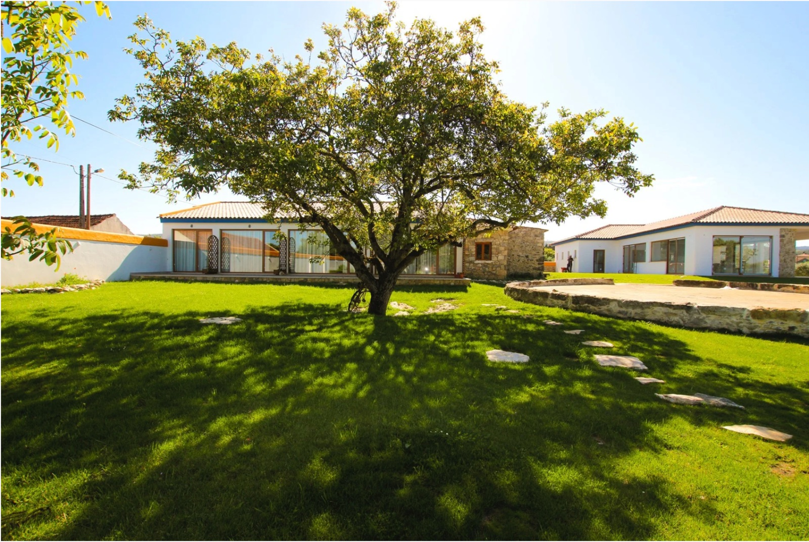
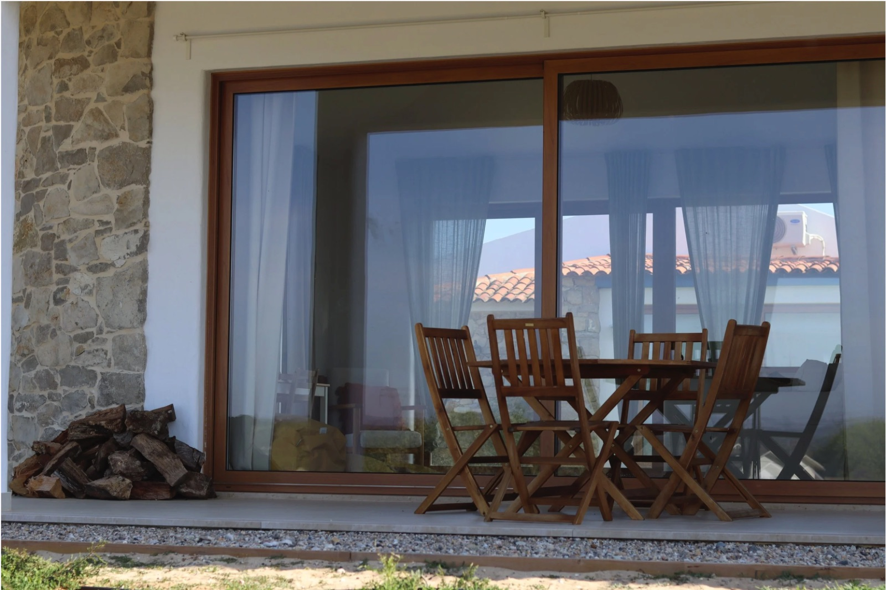
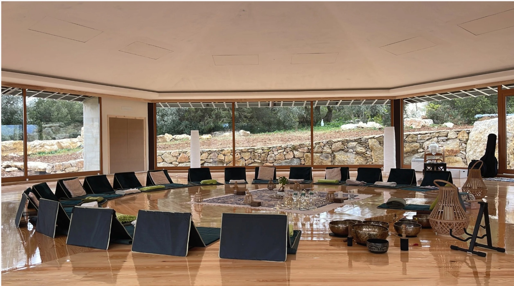

Yoga retreat in Portugal, October 2027Pause. Breathe.
Be present.
Four days of yoga, meditation and deep rest at Terra Raíz, an eco-sanctuary in Casal da Charneca, Alcobaça, about one hour from Lisbon.
- Dates
- 8 to 11 Oct 2027
- From
- £770.00
- Deposit
- £200
Limited spaces are available, so it's first come, first served. Secure yours early with a £200 deposit.


Alcobaça, between the mountains and the sea
Terra Raíz sits in Casal da Charneca, Alcobaça, near the Serra d'Aire e Candeeiros Natural Park. Limestone hills, quiet trails and open countryside surround you, with the Atlantic coast close by.
It is about one hour from Lisbon airport, so you can leave London in the morning and be on the mat by sunset.
- Serra de Aire e Candeeiros hiking
- 10 min
- Nazaré beaches and cliffs
- 20 min
- Batalha Monastery
- 25 min
- Lisbon airport
- About 1 hr

Terra Raíz eco-sanctuary
Terra Raíz is a wellness retreat and eco-sanctuary set in nature, designed for rest and reconnection. Practice takes place in a calm, light-filled space, with outdoor terraces to sit, read and watch the light change.
Your accommodation, meals and all yoga props are taken care of, so the only thing you need to bring is yourself.
What's included
Included
- Accommodation in a shared room, with towels
- Two organic meals a day, breakfast and dinner
- A daily basket of fruit and nuts, plus juices, tea, coffee and water
- Daily sunrise meditation and dynamic Yogasana
- Evening Vinyasa Krama into Yin or Yoga Nidra
- Breathwork and pranayama
- Yoga mats and props, or bring your own mat if you prefer
- An organised group day trip to the local towns
Not included
- Flights
- Airport transfers, available on request for an extra fee
- Travel and medical insurance
- Massages and personal expenses
- Alcohol, this is an alcohol-free retreat
Optional extras
- Private room, €30 per night
- Extra night with breakfast, €45
- Airport transfer, price on request
No experience needed, just an open heart. Every session is optional, take what serves you.
Your daily rhythm
- SunriseMeditation, then a dynamic, heat-building Yogasana practice.
- MorningA fresh, healthy breakfast shared with the group.
- AfternoonFree time for reflection, hiking the Serra de Aire, or a trip to Nazaré or Batalha.
- Late afternoonA grounding Vinyasa flow into deep Yin or Yoga Nidra.
- EveningA communal, nourishing dinner under the stars.
Schedule subject to small changes.

Sonia Lopez, RYT 540
Sonia is a 500-hour Yoga Alliance registered teacher, trained under Stewart Gilchrist, with additional Yin Yoga certification. Her teaching balances strength and stillness, rooted in the yoga tradition and the joy of movement.
On retreat, she holds a warm, supportive space where everyone, from first-timers to seasoned practitioners, can rest, reset and return home renewed.
More about Sonia →Secure your place
To keep this retreat intimate, spaces at Terra Raíz are limited, so it's first come, first served. Lock in your spot early with a non-refundable deposit, then spread the remaining balance in instalments leading up to autumn 2027.
Questions before you book? Send me a message or call +44 (0) 7828 893 738.
Per person
Full retreat, 8 to 11 October 2027
- Pay a £200 deposit securely by Monzo. Please use your full name and "Retreat deposit" as the reference.
- Pay the £570 balance in instalments through the same Monzo link, using your name and "Retreat balance" as the reference.
- Final balance due 9 August 2027, 60 days before the retreat.
The £200 deposit is non-refundable, as it secures your room with the venue. By paying your deposit you agree to the retreat terms and conditions. Please send me a message once you have paid so I can confirm your place.
Yoga retreat in Portugal, your questions answered
Is this yoga retreat suitable for beginners?
Yes. The retreat is open to all levels, from complete beginners to experienced practitioners. Every class offers modifications, and every session is optional.
Where is the retreat and how do I get there from London?
The retreat is at Terra Raíz, an eco-sanctuary in Casal da Charneca, Alcobaça, Portugal. Fly from London to Lisbon, then it is about one hour by road. Nazaré is 20 minutes away and the Serra de Aire e Candeeiros Natural Park is 10 minutes away. Airport transfers can be arranged on request for an extra fee.
How much does the retreat cost?
The retreat is £770 per person, which covers shared accommodation with towels, breakfast and dinner, fruit, nuts and drinks, all yoga sessions with mats and props, and a group day trip. Secure your place with a £200 non-refundable deposit, then pay the balance in instalments, due 60 days before the retreat.
What is not included?
Flights, airport transfers, travel and medical insurance, massages and personal expenses. A private room is €30 per night extra and an extra night with breakfast is €45.
Can I come on my own?
Absolutely. Many guests travel solo. The group is kept small and friendly, and shared rooms make it easy to connect with others.
Is it an alcohol-free retreat?
Yes. This is an alcohol-free retreat, with organic meals, juices, tea, coffee and water provided throughout your stay.
What style of yoga will we practise?
Each day includes sunrise meditation and dynamic Yogasana, then an evening Vinyasa Krama flow into Yin or Yoga Nidra, plus breathwork and pranayama. The retreat is led by Sonia Lopez, a 500-hour Yoga Alliance registered teacher.
Retreat terms and conditions
1. Booking and payments
Securing your place. A £200 non-refundable deposit reserves your place. Your booking is confirmed once the deposit has been received.
Final balance. The remaining £570 can be paid in instalments by agreement. The final balance is due 60 days before the retreat starts, by 9 August 2027. If it has not been paid by then, I may release your place and the deposit will not be refunded.
Prices. The retreat price is in pounds sterling. Optional extras paid at the venue, such as a private room or extra night, are priced in euros.
By paying your deposit, you confirm you have read and agree to these terms.
2. Cancellations and refunds
Because rooms and retreat arrangements are secured in advance, the £200 deposit is non-refundable. If you need to cancel, the following applies to any balance you have already paid:
- 61 days or more before the retreat (on or before 8 August 2027): 80% refund.
- 30 to 60 days before (9 August to 8 September 2027): 50% refund.
- Fewer than 30 days before, or no-show: no refund.
All cancellations must be made in writing to info@soniayogi.com. The date I receive your email is the date of cancellation.
Transferring your place. If you cannot attend, you may pass your place to a friend, with my agreement and at no extra cost, provided they accept these terms.
3. If the retreat is changed or cancelled by us
In the unlikely event that I need to cancel the retreat, you will receive a full refund of everything you have paid to soniayogi, including your deposit, or the option to move to a future date.
I am not responsible for flights, travel or other costs you have booked separately, which is one more reason travel insurance is essential.
Small changes to the daily schedule, sessions or day trip may happen because of weather, the venue or other circumstances. These do not entitle you to a refund.
4. What's included
Accommodation in a shared room, with towels. All yoga sessions, with mats and props provided, though you are welcome to bring your own mat. Two organic meals a day, breakfast and dinner. A daily basket of fruit and nuts, plus juices, tea, coffee and water throughout your stay. An organised group day trip to the local towns.
Private rooms are available for an extra €30 per night, subject to availability.
5. What's not included
Flights and airport transfers, travel and medical insurance, massages, personal expenses and alcohol. This is an alcohol-free retreat.
An extra night, with breakfast, can be added for €45, subject to availability.
6. Travel and insurance
Getting there. You are responsible for booking your own flights and making sure your passport and travel documents are valid. Airport transfers can be arranged on request for an extra fee.
Insurance. Travel insurance is required. Please make sure your policy covers medical emergencies, lost luggage and trip cancellation.
7. Health, safety and liability
Listen to your body. All sessions, including Vinyasa, Yin and Yoga Nidra, are open to all levels, with modifications offered. Every session is optional.
Health. Please tell me before booking about any injuries or medical conditions, or if you are pregnant. Depending on your situation, I may ask you to check with your doctor before attending. Guests must be 18 or over.
Personal responsibility. You take part at your own risk and are responsible for your own health and wellbeing. soniayogi is not responsible for lost or damaged belongings, or for delays and disruption caused by events outside our control. Nothing in these terms limits liability for death or personal injury caused by negligence, or anything else that cannot be excluded by law.
Respect for the group and venue. Please respect other guests, the venue and its staff. Any damage to the property will be charged to the guest responsible. If a guest's behaviour seriously disrupts the retreat, I may ask them to leave, with no refund.
8. Photos
I may take group photos during the retreat to share on the soniayogi website and social media. If you would prefer not to appear in them, just let me know.
Questions about these terms? Email info@soniayogi.com before booking.
Your reset is waiting
Step away from the noise and come home to yourself. Limited spaces are available, so it's first come, first served.